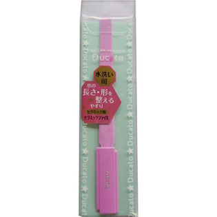

返回列表
产品名称：デュカート セラミックファイル

シャンテイ デュカート セラミックファイル ＿
メーカー シャンテイ
JANコード 4901604461128
商品の特徴
○水洗い可
○爪の長さ・形を整えるやすり
- 成分・分量
- セラミック研磨剤、PS
- 用法及び用量
- ・爪の先端の形を整えます。その時爪に対して45度の角度にあて、サイドから中心に向かって一方向に削り、カーブ部分は爪の形に沿って整えます。
・樹脂製ベースにセラミックの微粒子をコーティングしているため、汚れを洗い流すことができ、清潔です。
※力を入れすぎると皮膚を傷つけてしまう可能性があるので、ご注意ください。
※やすり表面の粒子が剥げて削れなくなったら、新しいやすりに交換してください。